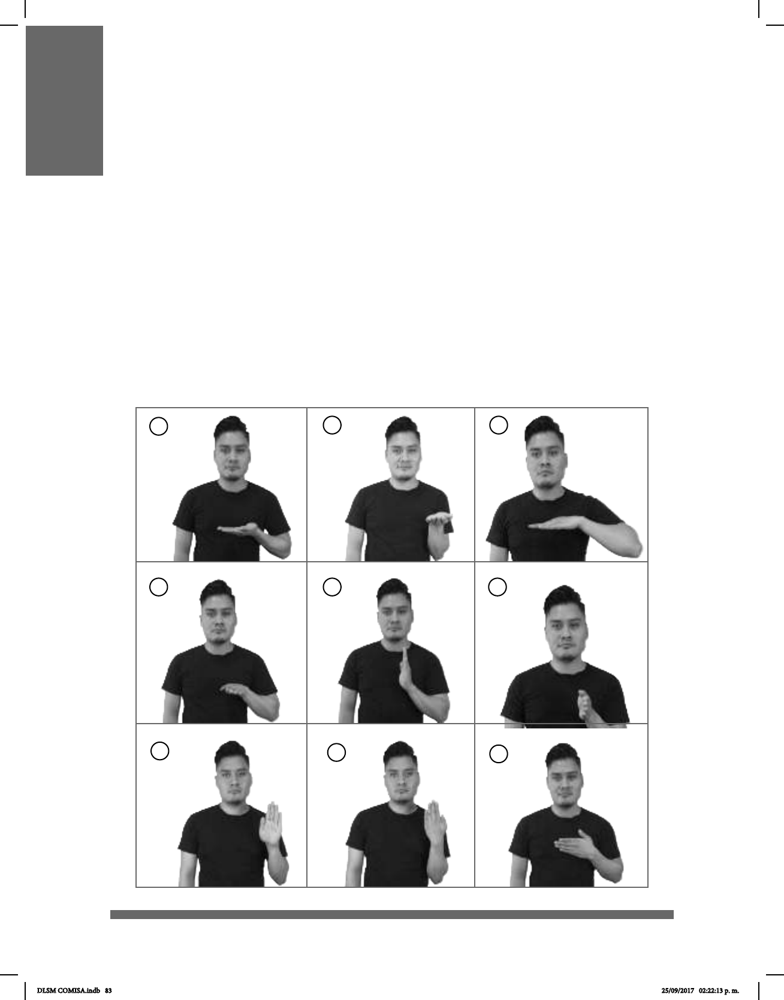

83
ORIENTACIÓN DE LA PALMA
DE LA MANO
1
4
7
2
5
8
3
6
9
La orientación de la mano es la posición de la palma con respecto al cuerpo del señante
al momento de hacer la conguración manual.
Existen nueve orientaciones, las cuales se muestran en el cuadro inferior:
1. Palma de la mano orientada
hacia arriba y puntas de los dedos
hacia la izquierda.
2. Palma de la mano orientada
hacia arriba, puntas de los dedos
hacia delante.
3. Palma orientada hacia abajo y
puntas de los dedos hacia la
izquierda.
4. Palma orientada hacia abajo y
puntas de los dedos hacia delante.
5. Palma orientada hacia la
izquierda y puntas de los dedos
hacia arriba.
6. Palma orientada hacia la
izquierda y puntas de los dedos
delante.
7. Palma orientada hacia el frente y
puntas de los dedos hacia arriba.
8. Palma orientada frente al cuerpo
con las puntas de los dedos hacia
arriba.
9. Palma orientada frente al cuerpo
con las puntas hacia la izquierda.
DLSM COMISA.indb 83 25/09/2017 02:22:13 p. m.